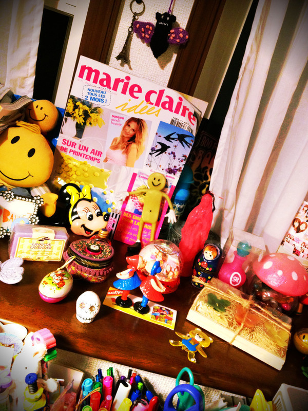
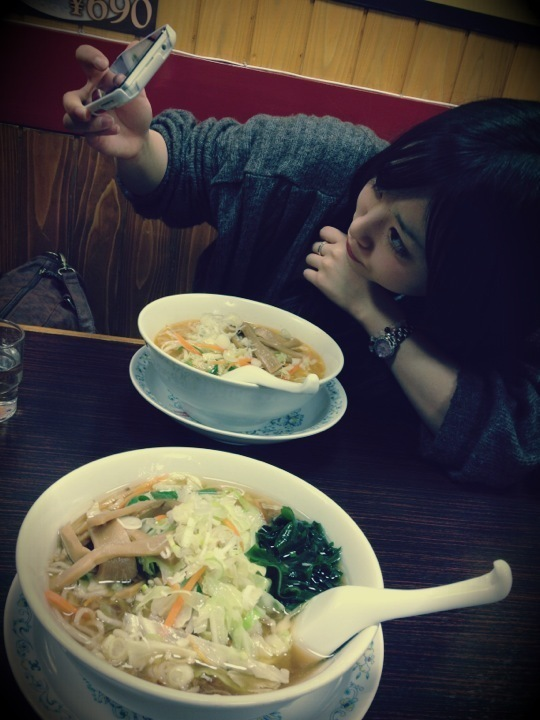
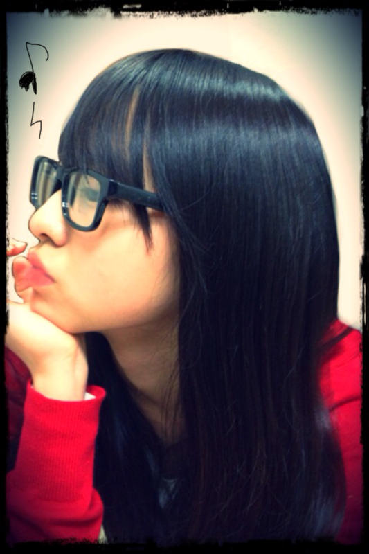
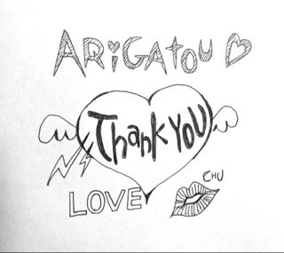
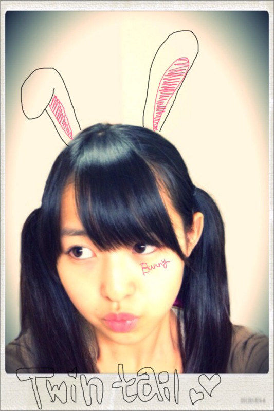
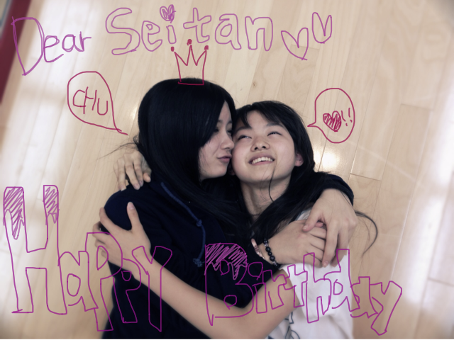
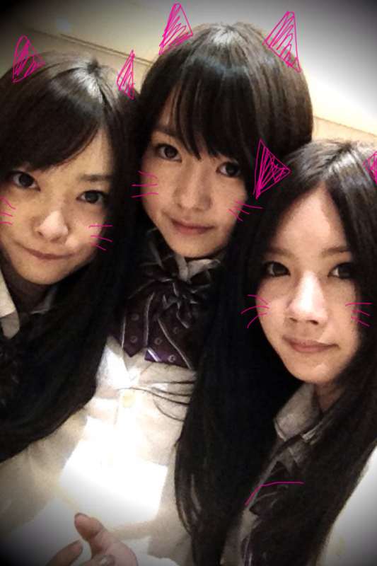
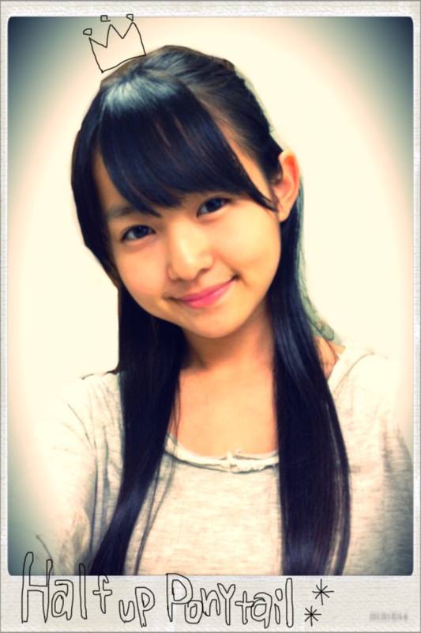
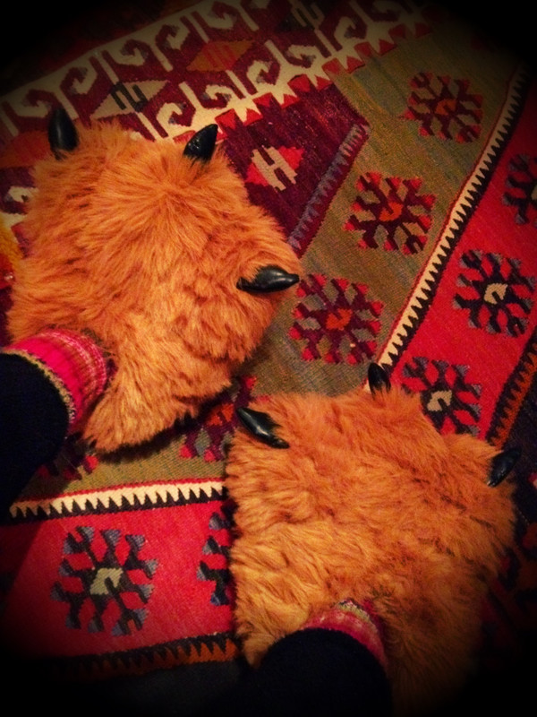

2011/1208Thu21回目*marika
こんばんわ＊
いつも読んでくださる方、
初めて読んでくださった方、
コメントしてくださった方、
ありがとうございます^^*
最近貧血によくなるベビたんですです。
(鉄分足りないみたいなのでプルーン食べます)
そういえば...!!
もう20回も更新したとは!!!!!
はやいはやい
みなさん!
沢山のリクエストありがとうございました♡
お団子←めんどくさくないですよ♪
ハーフアップツイン
巻きサイド縛り
ツノヘア←興味ある----!!!
猫耳ヘア←自分でできないけどやってみたい♡
サイドポニー
ポニーテール
お団子とハーフアップツインの
リクエストが多かったので
機会があれば順番に載せますね☆*!!
ヘアアレンジって楽しいのよ-♪
普段はいっつもダウンだけどね笑
..................................
＊質問返します!
・クリスマス何がほしいの？
何かな~...
みなさんにイベントで会えるだけで
じゅうぶんうれしいので♡!!
でも物だったら.....
おしゃれなスノードームとかほしいかも←
最近集めてるんです^^
・誕生日何がほしいの？
雑貨とかお洋服かな!
・おしゃれはどこで学ぶの？
いろんな本や雑誌を読んで
おしゃれ研究してるよ~♡
服に興味もったきっかけはママ!
・前の記事の写真は何ラーメン？
ねねころはみそラーメン*!!
私は野菜ラーメンです*!!
違うの頼んだけど
塩ラーメンにお酢をかけるのおすすめです!
・どうぶつの森やってたならキャラで
もさきちって言うウサギいたの知ってる？
知ってます知ってます!!
きのこ村に住んでましたよ~笑*
・乃木坂で他メンにこれだけは負けないものって何？
変顔のレパートリーの多さです笑←
・バレエは何年やってたの？
今でも踊りたい？
どんな役やってたの？
バレエは4歳から習ってたから
約11年です。
今でも踊りたいですよ---!!
自然と踊っちゃう!
最後にやったのは
ドンキホーテのキューピットです♡
楽しかったなぁ***
・モーターショー出演する？
握手会で参加します＊
ゲーム選抜外れました~泣
せいらりんと対決したけど
すぐ抜かされた笑
そりゃそーだ!!←開き直り
以上＊
..................................
今日は私服載せちゃいますぞぃ:D
じゃん!
かーわいーだろー
このニット*
ママのおさがりのsunaokuwaharaのもの!
自分じゃぁ手出せないブランド!きゃ-
このヘルメットみたいな形の帽子もすき♡
帽子だいすき---
あともういっこしゃしん載せます。
私のすきなものがすぐ分かるしゃしん＊

にぎやかな私のお部屋*(の一部）
ただかわいく撮れたから
載せたかったの←ぇー
うん、ただそれだけっさ=3へっへ
はい!
自分の体調しっっっかり整えます!!
みなさんやスタッフさんに心配かけないように=3
鉄分とらなきゃ---!
みなさんも寒いからあったかくして寝ましょう*
うん。そうしましょう!
明日も一緒に頑張ろう***
今日は早く寝ます。
明日に向けて、おやすみなさい＊
cHU
LOVE
ベビたん*****bA by marika
2011/1208Thu20回目*marika
やぁっ!!ベビたんですよ。
いつも読んでくださってる方、
初めて読んでくださった方、
コメントしてくださった方、
ありがとうございます:)!!
...............................
＊質問返します!
・最近は何をして遊ぶのが好き？
のぎメンとじゃれ合うことです♡
・モコモコ系好きなの？
モコモコかわいいですよね!*
うん。モサモサとかフサフサとか好きです笑←
・写真はパソコンで描いたりしてる？
アプリ使ってますよ-!!
便利ですよ^^*
・お菓子なら何を作るのが得意？
そんな...でもないですけど
簡単なクッキーとかですかね...
ほんとそんなでもない!!すみません!!
女子力上げなきゃ~~~!!
・カラオケに行ったらいつもどんな歌唄うの？
あんまりカラオケ行かないんですけど
行くときはみんなが知ってる流行りの曲をうたいます*
まぁ盛り上げ担当が多いかな。
マラカス持ってへい!へい!ゆってたらね、
うるさいみたいです...笑
・手紙の柄は何がいい？
キャラクターでも全然いいと思います!*
うれしいです-!!ありがとうございます><
・好きなお菓子は？
梅系お菓子!!!!!
茎わかめとかこんぶすき♡
・ビーフジャーキー以外に好きな食べ物は？
笑!!
ピーマンパプリカなす生姜チーズ梅セロリ....etcです。
・どこ出身？
本当は大阪なんですけど、
神奈川に小３から住んでて長いんです++;
だから神奈川出身!!
・他のメンバーのブログって読んでる？
時間があれば読みますよ-*!!
みんなの記事おもしろい!
・まりりって呼んでもいい？
呼んで呼んで!!
うれしいですよ^^*
・ダウンを上手く着こなす方法ってある？
ダウンはボリュームがあるから
下をすっきりさせたらいいと思います☆
ちなみに私の軽いダウンは家用です。
・好きなゲームとかある？
昔動物の森やってました**
マリオとか!!
最近やってないなぁ...
・他に丸顔のメンバーはいる？
私めっちゃ丸いですよね!
よくほっぺ触られる笑
メンバーの中だったら...とまとかな~??
丸顔仲間＊!
・大阪には友達いる？
たっくさんいますよ!!
あ〜みんなにめっっっちゃ会いたいわ-...
・手紙ってどこに送ればいい？
ありがとうございます♡*
〒102-8353
東京都千代田区六番町4番地5
「乃木坂46運営事務局」宛
に送ってください!
私のところにしっかり届きます!笑
以上!
...............................
Lesson帰りにねねころとラーメン食べた~!

自撮りしてるねねをパシャリ＊
ん〜かわいい笑!!
ラーメンおいしそうでしょ?
食べたい?
食べたい?
食べちゃったよ笑
(...調子のっちゃた)←
髪型ほめていただいて
とってもとってもうれしいです!!*
次は何載せようかな~:Dにやにや

ふん ふんふふんふふ---ん ♪♫♩
赤いニットはこないだ買ったZARAのカーディガン♪
(ちょとクリスマス意識)
もうすぐクリスマスですね*!
サンタさん。今年はくるかな〜←
みなさんは何をお願いしますか＊?
みなさん。
コメントで
「読んでいて楽しい」
「写真がすき」
.....
いつも、いつも、
本当にうれしいです。
私のBloGを読んで
元気になってくれて
笑顔になってくれて
いじってくれて....←
本当に心暖かい方ばかりで。
私もBloGをかくのが楽しいです＊
いつも感謝してます*＊。+*
...なんかかたいね-!!!
でもBloGをかいてる時いっつも思うことなんです!!
うん!...
寒いですね。
さっむ----------!!!!!!!!!
何度も言うけど、みなさん風邪ひかないでね。
心配しちゃうからね。
受験ある方!頑張ってください!!
お仕事、学校。
寒くて手がかじかんじゃうけども
一緒に頑張りましょう＊!!
ベビたん*****bA by marika
2011/1207Wed19回目*marika
テンション高山った-------!!!なベビたんです。
こんばんわ☆
いつも読んでくださってる方、
初めて読んでくださった方、
コメントしてくださった方、
ありがとうございます~!
ついにテストが終わったよ----------!!うっひょい
がんばってとコメントしてくださった方
ありがとうございました^^*
そして、せいたんに続いて.....
私たち乃木坂46を支えてくださってる
スタッフさんの誕生日でした♪
みんなでお祝いしたのよん:)!!
そして.....お手紙、プレゼント届きました~><
本当にもぅ...うれしすぎます!!
ありがとうございました♡
直筆のお手紙、じんわりきます。
もちろんコメントも!!
会いたくなるやないか-----!!!!
これテスト期間中にコメントを読んで
急にかきたくなってかいたの
こういうちょとおしゃれな絵かくのもすき＊

ありがとう
ありがとう
ありがとう
だいすき♡
CHu 
(初めて絵文字使ったけど色付きはかわいい*)

バニーchan
ツインテール.....
童顔だからさらに幼くなっちゃった。
ハーフアップとどっちがすき??
他にもリクエストがあれば載せますよ:D
あっ!みなさん。
くつしたのかかとのちょっと上の部分に
くっきり穴あいたことありますか??
変なこときいてすいません。
私今日!(ていうか昨日!)
学校で全く気づかなかったんやけど...
右足からかかとのちょと上がこんにちわしてました。笑
.......................笑って。←ぇ
Lessonでゆみ姉に見せたら
「なんでそこに穴が開くの!?笑」
うん。知らない。
なんでなんだ~~~~~!!!!!!
かかとならまだ分かるけど
かかとのちょと上の部分て!!笑
さよならくつしたちゃん...(右)
はい。変な話してすみませんでした笑
返してない質問などがあったらごめんなさい!
また返しますね***
テストがある方、ふぁいと‼
今日も元気に頑張りましょいっ☆*
LOVE
ベビたん*****bA by marika
2011/1206Tue18回目*marika
いつも読んでくださってる方、
初めて読んでくださった方、
コメントしてくださった方.....!!
こんばんわ:D
前に載っけたしゃしんで
みなさん、メンバーに絶賛されて
うひょうひょなベビたんですよ。
久しぶりにLesson行ってきやした~=3!!
*****HappY BiRtHDay*****
せいたん♡2011.12.5
みんなLessonお疲れ様*
楽しかったな~♪
せいたんおめでとぅ♡
mail送ったら、私のこと『ばかすっき♥』やって♡
うん。知ってる♡←
せいたんちゅっちゅしてもらった!
いっつもされるけどね><
まりかもちゅーした笑
せいたんの大分弁すき!
つんつんかわい-もう!!
やさしくて涙もろいとこもすきや-!
せいたんだいすきっちゃ////
素敵な一年になりますように~~~!!!!!

おめでとう
i LOVE seitan
..:*+＊。.*。＊*...

ねね、私、せいたん＊
にゃー
寒くなってきました~!!
めっちゃ寒い><
軽いダウンおすすめですよぉ!
あったかいよ~^^*
オオカミの足もあったかいの--いひひ
ツインテールはテスト終わったら
載せるーねっ☆
他にもいろいろ載せたいな-*
いつも沢山のコメントありがとうございます＊
もうね!本当にうれしいわっ!!
どこまで私をほっかほかにさせて
うれしくさせるんや--------!!!!!←
お手紙、何でもうれしいです!
ありがとうございます***
質問はまたゆっくり返します><
明日でテスト終わりだ!!
がんばろ-------------=3
風邪ひかないようにね。
みんなだいすき♡***
ベビたん*****bA by marika
2011/1204Sun17回目*marika
やっぱりBloGはかくのは
楽しいし、みなさんに読んでもらいたい!!
ということで♪
ベビたんだよ。まりかだよ。
いつも読んでくださってる方、
初めてコメントしてうださった方、
ありがとうございます!
質問全然返せなくてごめんなさい><
..........................
＊お手紙の質問から答えます!!
・行きたい国は？
あーいっぱいありますよ!!
アメリカ.メキシコ.モロッコ
バリ島.インド.フランス.イギリス!!
その中でも今いちばん行きたいのが
メキシコ♡メキシコの雑貨だいすきで
ブリキの小物集めてたりします^^*
・得意料理は？
全然料理できないんですよ~泣
簡単で基本的なのしか作れない~きゃ-
お菓子の方が作れるかな??
・ハーフアップのポニーテールの写メ載せて!
...ということで!撮りました＊

ハーフってお嬢様なイメージがある。冠描いたよん←
似合ってるかな?
ツインテールも載せますね~＊へへ
＊コメントからの質問答えます!
・男の人に会ったときに最初に見るのはどこ？
知り合いなら服装見ちゃう!なぁ...
・プレゼントなに貰ったの？
ひみつ-!!
.....とかいって←
かわいいマグカップと入浴剤
ブタウサギchanのストラップをいただきました**
使うのもったいなくて飾ってます^^
・名古屋きてください!
行きたいです〜!!
会いたいなぁ♪
応援ありがとうございます!!
・珍しいあだ名つけて!
まころん♪さん
珍しいあだ名かぁ~
考えました!!
まこたん
まこちゃむ
まここ
まこちむ
がいいな〜と思いました^^
珍しくないか- -;
今のでもじゅうぶんかわいいですよ♪
・期待していいですか？
私のことを乃木坂のことを
もっとすきになってもらえるように
頑張ります!
＊努力!感謝!笑顔!＊
期待しててくださいね***
・ベビたんの持ってるヒョウ柄は、スマホ？
そうです！
ヒョウ柄意外ですよね~?
今度のカバーは大人っぽい木のケースがいいな^^*
続いて、
この前の最近買ったものはある?
という質問で答えた
ひとめぼれしたおNeWwwなスリッパ!
・
・
・
・
・
じゃん!!

う---------------ん!!かうぁうぃ-----♡♡
オオカミの足
ヴィレヴァンで即買い。笑
めちゃ歩くの大変!でもかわいいからね♡←
..........................
そういえばBLT!!
写真当たった方、
写真そろえてくださった方、
サイン写真当たって持っててくださる方、
ありがとうございます!**
かわいく写れるように頑張ろ!
明日もテスト〜!
明日も一緒に頑張りましょう☆
ベビたん*****bA by marika